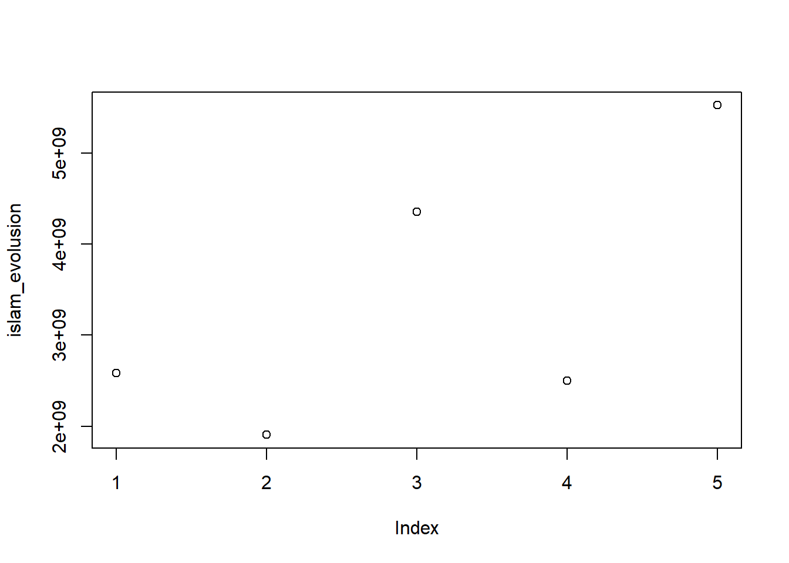

Evolution111 of Religious Population
Visualizing the Prediction of Major Religious Population Changing From 2010 to 2050
Yifan Wang
Introduction
With the advancement in science and the spreading of secularism, the problem of the necessaries of religions arises. Especially in younger generations, the ratio of people identified as believers stays low. In 2013, for example, only 9.6% of the Jewish population in the states are between age 18-24 while 11.7% of the U.S. population falls into the same age interval (Saxe and Tighe, 2013). And at the same time 25.6% of Jewish community are older than 65 years old while 19.2% of the U.S. population falls into the age interval (Saxe and Tighe, 2013).
This project aims to provide a visualization of the changing in the religious and unreligious population to answer the following questions: a) Which religion would have the largest believer group in the coming decades and b) How would the skeptic or atheist population varies from now to the year 2050. The hypothesis towards this research is that religious population for all the major religions will increase and the community of skeptics would shrink. With the data collected by the Global Religious Future project (http://globalreligiousfutures.org), the evolution, from the year 2010 to 2050, in the population of three major religions (i.e. Christianism, Islam and Buddhism) around the world is processed and displayed. The religious unaffiliated population, in addition, is visualized as well. In this project, a series of static and dynamic maps and images (e.g. animation world map, bubble diagram) were produced to show the trend of the evolution of the religious population. With the result from the data processing, Islam would become the largest religion and its believers would experience the most obvious increasing from now to the year 2050. At the same time, the coming decades will witness the decreasing of the religious unaffiliated population.
Religion, it was thought, would thin out from its more robust, supernaturalist forms or die out altogether. But the theory that technological advancement brings inevitable secularization is now being scrapped or radically rethought. ~ Timothy Keller, < the Reason for God >
Materials and Methods
Loading required packages (you may need to install some packages):
#install.packages("data.table")
#install.packages("rworldmap")
#install.packages("dplyr")
#install.packages("tidyr")
#install.packages("ggplot2")
#install.packages("maps")
library(dplyr)
library(tidyr)
library(data.table)
library(rworldmap)
library(ggplot2)
library(maps)
library(spocc)
library(maptools)
library(RColorBrewer)
knitr::opts_chunk$set(cache=TRUE) # cache the results for quick compilingUsing download.file() function to download the surveyed and estimated population for the believer community of
- Islam
- Christianity
- Buddahism
- Religious Unaffiliated
from the The Global Religious Future Project. You can visit the Data Explorer for data about other religions.
The dataset downloaded is the survey result in 234 countries and predictions made upon them (check http://globalreligiousfutures.org/explorer/about-grf-data for more information). For each of the three representative religions, the number of believers in the year 2010, 2020, 2030, 2040 and 2050 is separately stored and downloaded in different datasets. The three religions mentioned above were selected to show the general trend of the variation of religious population since that comparing to other religions that have large believer community, these three religions were more spread over the world so that could better represent the religious population community despite factors like politic or local culture.
For each religion, the data in the year 2010, 2020, 2030, 2040 and 2050 is downloaded and stored separately. The code following the download command read the data from the downloaded CSV file and create a data frame named as “Religion_Year” (e.g. Islam_2010) for each single dataset. The “skip” and “nrow” factor in the read.csv2() function serve to skip the description and space lines in the original file.
Download Islam Population data, 2010 - 2050
## download the world Islam population data for 2010
download.file("http://globalreligiousfutures.org/csv/22411", "muslim10.csv")
m10 <- readLines("muslim10.csv")
islam_2010 <- read.csv2(text = m10,
sep = ",",
header = FALSE,
skip = 11,
col.names = c("Country_Code","Country","Religion_Population"),
nrows = length(m10) - 16)
## download the world Islam population data for 2020
download.file("http://globalreligiousfutures.org/csv/21689", "muslim20.csv")
m20 <- readLines("muslim20.csv")
islam_2020 <- read.csv2(text = m20,
sep = ",",
header = FALSE,
skip = 14,
col.names = c("Country_Code","Country","Religion_Population"),
nrows = length(m20) - 17)
## download the world Islam population data for 2030
download.file("http://globalreligiousfutures.org/csv/21688", "muslim30.csv")
m30 <- readLines("muslim30.csv")
islam_2030 <- read.csv2(text = m30,
sep = ",",
header = FALSE,
skip = 11,
col.names = c("Country_Code","Country","Religion_Population"),
nrows = length(m30) - 14)
## download the world Islam population data for 2040
download.file("http://globalreligiousfutures.org/csv/21686", "muslim40.csv")
m40 <- readLines("muslim40.csv")
islam_2040 <- read.csv2(text = m40,
sep = ",",
header = FALSE,
skip = 14,
col.names = c("Country_Code","Country","Religion_Population"),
nrows = length(m40) - 17)
## download the world Islam population data for 2050
download.file("http://globalreligiousfutures.org/csv/21662", "muslim50.csv")
m50 <- readLines("muslim50.csv")
islam_2050 <- read.csv2(text = m50,
sep = ",",
header = FALSE,
skip = 3,
col.names = c("Country_Code","Country","Religion_Population"),
nrows = length(m50) - 6)Download Christianity Population data, 2010 - 2050
## download the world Christianity population data for 2010
download.file("http://globalreligiousfutures.org/csv/23086", "crs10.csv")
c10 <- readLines("crs10.csv")
chris_2010 <- read.csv2(text = c10,
sep = ",",
header = FALSE,
skip = 14,
col.names = c("Country_Code","Country","Religion_Population"),
nrows = length(c10))
## download the world Christianity population data for 2020
download.file("http://globalreligiousfutures.org/csv/23071", "crs20.csv")
c20 <- readLines("crs20.csv")
chris_2020 <- read.csv2(text = c20,
sep = ",",
header = FALSE,
skip = 11,
col.names = c("Country_Code","Country","Religion_Population"),
nrows = length(c20) - 14)
## download the world Christianity population data for 2030
download.file("http://globalreligiousfutures.org/csv/23072", "crs30.csv")
c30 <- readLines("crs30.csv")
chris_2030 <- read.csv2(text = c30,
sep = ",",
header = FALSE,
skip = 11,
col.names = c("Country_Code","Country","Religion_Population"),
nrows = length(c30) - 14)
## download the world Christianity population data for 2040
download.file("http://globalreligiousfutures.org/csv/23073", "crs40.csv")
c40 <- readLines("crs40.csv")
chris_2040 <- read.csv2(text = c40,
sep = ",",
header = FALSE,
skip = 11,
col.names = c("Country_Code","Country","Religion_Population"),
nrows = length(c40) - 14)
## download the world Christianity population data for 2050
download.file("http://globalreligiousfutures.org/csv/23074", "crs50.csv")
c50 <- readLines("crs50.csv")
chris_2050 <- read.csv2(text = c50,
sep = ",",
header = FALSE,
skip = 11,
col.names = c("Country_Code","Country","Religion_Population"),
nrows = length(c50) - 14)Download Buddahism Population data, 2010 - 2050
## download the world Buddahism population data for 2010
download.file("http://globalreligiousfutures.org/csv/22196", "buda10.csv")
b10 <- readLines("buda10.csv")
buddha_2010 <- read.csv2(text = b10,
sep = ",",
header = FALSE,
skip = 11,
col.names = c("Country_Code","Country","Religion_Population"),
nrows = length(b10) - 16)
## download the world Buddahism population data for 2020
download.file("http://globalreligiousfutures.org/csv/22885", "buda20.csv")
b20 <- readLines("buda20.csv")
buddha_2020 <- read.csv2(text = b20,
sep = ",",
header = FALSE,
skip = 11,
col.names = c("Country_Code","Country","Religion_Population"),
nrows = length(b20) - 14)
## download the world Buddahism population data for 2030
download.file("http://globalreligiousfutures.org/csv/23075", "buda30.csv")
b30 <- readLines("buda30.csv")
buddha_2030 <- read.csv2(text = b30,
sep = ",",
header = FALSE,
skip = 11,
col.names = c("Country_Code","Country","Religion_Population"),
nrows = length(b30) - 16)
## download the world Buddahism population data for 2040
download.file("http://globalreligiousfutures.org/csv/23076", "buda40.csv")
b40 <- readLines("buda40.csv")
buddha_2040 <- read.csv2(text = b40,
sep = ",",
header = FALSE,
skip = 11,
col.names = c("Country_Code","Country","Religion_Population"),
nrows = length(b40) - 14)
## download the world Buddahism population data for 2050
download.file("http://globalreligiousfutures.org/csv/23077", "buda50.csv")
b50 <- readLines("buda50.csv")
buddha_2050 <- read.csv2(text = b50,
sep = ",",
header = FALSE,
skip = 11,
col.names = c("Country_Code","Country","Religion_Population"),
nrows = length(b50) - 14)Download Religious Unaffiliated Population data, 2010 - 2050
## download the world religious unaffiliated population data for 2010
## download the world religious unaffiliated population data for 2020
download.file("http://globalreligiousfutures.org/csv/23079", "unaf20.csv")
u20 <- readLines("unaf20.csv")
unaffiliated_2020 <- read.csv2(text = u20,
sep = ",",
header = FALSE,
skip = 11,
col.names = c("Country_Code","Country","Religion_Population"),
nrows = length(u20) - 14)
## download the world religious unaffiliated population data for 2030
download.file("http://globalreligiousfutures.org/csv/23080", "unaf30.csv")
u30 <- readLines("unaf30.csv")
unaffiliated_2030 <- read.csv2(text = u30,
sep = ",",
header = FALSE,
skip = 11,
col.names = c("Country_Code","Country","Religion_Population"),
nrows = length(u30) - 14)
## download the world religious unaffiliated population data for 2040
download.file("http://globalreligiousfutures.org/csv/23081", "unaf40.csv")
u40 <- readLines("unaf40.csv")
unaffiliated_2040 <- read.csv2(text = u40,
sep = ",",
header = FALSE,
skip = 11,
col.names = c("Country_Code","Country","Religion_Population"),
nrows = length(u40) - 14)
## download the world religious unaffiliated population data for 2050
download.file("http://globalreligiousfutures.org/csv/23082", "unaf50.csv")
u50 <- readLines("unaf50.csv")
unaffiliated_2050 <- read.csv2(text = u50,
sep = ",",
header = FALSE,
skip = 11,
col.names = c("Country_Code","Country","Religion_Population"),
nrows = length(u50) - 14)Plotting the 2010 Islam Population Map
#Loading the Color Palette for Map
color1 <- brewer.pal(5,"YlOrRd")
# Plotting the Country Heat Map of Muslim Population in 2010
Islam_2010_iso <- as.character(islam_2010$Country_Code)
Islam_2010_Population <- as.numeric(gsub(",","",as.character(islam_2010$Religion_Population)))
islam_2010_plot <- joinCountryData2Map(data.frame(country_iso = Islam_2010_iso,
value = Islam_2010_Population),
joinCode = "ISO2",
nameJoinColumn = "country_iso")## 224 codes from your data successfully matched countries in the map
## 11 codes from your data failed to match with a country code in the map
## 17 codes from the map weren't represented in your datamap1 <- mapCountryData(islam_2010_plot,
nameColumnToPlot = "value",
mapTitle = "2010 World Muslim Population",
catMethod = "logFixedWidth",
colourPalette = color1,
addLegend = FALSE)
#add legend
do.call(addMapLegend, c(map1,
legendLabels="all",
labelFontSize = 0.5,
legendIntervals = "page",
digits = 4,
sigFigs = 4
))
Plotting the 2050 Islam Population Map
# Plotting the Country Heat Map of Muslim Population in 2050
Islam_2050_iso <- as.character(islam_2050$Country_Code)
Islam_2050_Population <- as.numeric(gsub(",","",as.character(islam_2050$Religion_Population)))
islam_2050_plot <- joinCountryData2Map(data.frame(country_iso = Islam_2050_iso,
value = Islam_2050_Population),
joinCode = "ISO2",
nameJoinColumn = "country_iso")## 224 codes from your data successfully matched countries in the map
## 21 codes from your data failed to match with a country code in the map
## 17 codes from the map weren't represented in your datamap2 <- mapCountryData(islam_2050_plot,
nameColumnToPlot = "value",
mapTitle = "2050 World Muslim Population",
catMethod = "logFixedWidth",
colourPalette = color1,
addLegend = FALSE)
do.call(addMapLegend, c(map2,legendLabels="all",labelFontSize = 0.5,legendIntervals = "page",digits = 4,sigFigs = 4))
Results
Conclusions
References
Saxe, L. and E. Tighe (2013). “Estimating and Understanding the Jewish Population in the United States: A Program of Research.” Contemporary Jewry 33(1): 43-62.